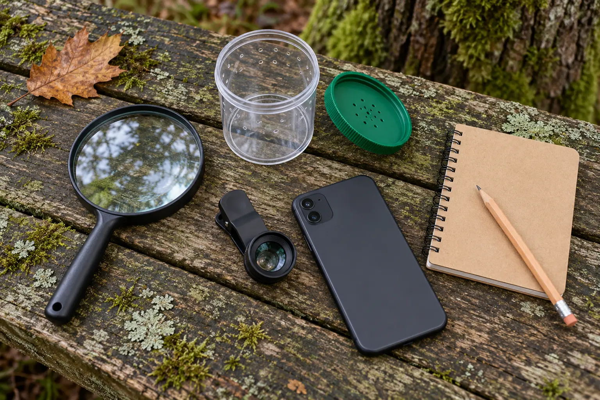

Handheld magnifier
Best first tool: immediate, screen-free inspection of leaves, bark, soil surface and other things that stay where they are.
Tradeoff: a small field of view and short working distance can frustrate younger children.
GEAR GUIDE · AGES 6–12 · OBSERVE, RECORD, RELEASE
Buy the tool that helps a child notice more—not the kit with the most plastic. Start with a magnifier, add a viewer only when local rules and gentle handling allow it, and use a phone lens when documenting detail matters.

“Nature observation kit” can mean a bag of colorful objects that mostly stay in the car. The better purchase starts with one real question. Does the child want to inspect a leaf without a screen? Compare tiny textures from several angles? Photograph detail for later identification? Each job points to a different tool.
No item on this page was hands-on tested by Mr Adventure Dad. The categories are compared by use case, compatibility, published specifications and the practical behavior they encourage. Borrow a magnifier, use a phone's native camera or try a household clear container with a loose object such as a fallen leaf before buying anything.
A simple magnifier makes the child move the tool and their head until the image becomes clear. That physical feedback teaches focus better than a pile of attachments. Look for a comfortable handle, a lens large enough for the child's visual search, rounded edges and a protective sleeve. A small secondary high-power inset can be useful, but it is harder to hold steady.
Do not use a magnifier to focus sunlight. Keep it away from eyes when another child is holding it. Inspect the lens and frame for cracks, loose pieces and sharp edges. A lanyard can create a snag or strangulation risk; follow the maker's age and supervision guidance rather than adding one casually.
A clear ventilated cup can show underside detail without fingers touching the subject, but “bug viewer” marketing does not create permission to collect. National Park Service guidance across parks commonly tells visitors to observe wildlife from a distance, avoid feeding or handling it and follow site-specific rules. A park, refuge, preserve or nature center may prohibit collecting entirely. Local rules win.
Use the viewer first with a fallen leaf, empty seed pod or piece of loose bark already on the ground. If a property permits brief invertebrate observation and the adult can identify a common, safe subject, keep the cup shaded and in hand. Do not leave it on hot ground, in a car or in direct sun. Never collect stinging, biting, venomous, protected, rare or unknown animals. Never add water or food, shake the cup, mix animals or keep one for the ride home.
Ventilation holes do not make a container safe indefinitely. If the child cannot follow the release rule without arguing, leave the viewer home. A good nature day does not require capture.
A clip-on phone macro lens can reveal leaf veins, lichen texture or the pattern on an empty shell. It also has the most compatibility traps. Check whether the clip can center over the correct camera on the exact phone and case. Thick cases, multi-camera switching and camera bumps can prevent alignment. Confirm the maker's stated working distance, app requirements and return terms.
A macro photograph is not automatically an identification. Scale, habitat, location and multiple angles still matter. Photograph the whole subject and surroundings before the close-up. Do not move a living subject into better light. When sharing an observation from a home, school or sensitive location, review the app's location and privacy settings. iNaturalist, for example, offers open, obscured and private geoprivacy choices; learn the difference before uploading.
If two of those fail, do not take the tool into the field yet. Practice at a table. The 30-minute after-school nature walk works perfectly well with only eyes and a pencil.
If a real gap remains, compare the handheld magnifier, ventilated viewing cup and clip-on phone macro lens categories below. The links are paid Amazon links. Choose by present fit, materials, cleaning instructions, exact compatibility and return terms—not star count alone.
Skip giant “explorer” bundles padded with whistles, nets, tweezers and collection boxes. Skip any viewer that encourages long-term keeping without a species-specific, lawful husbandry plan. Skip a phone lens that does not name compatible dimensions or cannot align with the family's actual camera. Skip a glass lens for a child who cannot yet carry it safely.
Do not pull bark, roll heavy logs, disturb nests or enter closed areas for a better find. If an animal changes behavior because of the family's presence, the National Park Service uses that as a sign you are too close. Back away.
Follow the manufacturer's lens and plastic-cleaning instructions. Remove soil with air or a soft brush before wiping a lens; grit can scratch. Do not use a chemical cleaner unless the maker permits it. Wash hands after outdoor observation and before eating. Store the empty viewer with its lid open so moisture does not become a permanent science project.
Keep the kit small: one tool, notebook, pencil and the family's usual water and first-aid basics. For longer wildlife viewing without approaching, use the family binocular guide. For an electronic documentation decision beyond phone lenses, use the kids' camera guide.
Rain: inspect three leaves from a covered porch without collecting wildlife. Cold: compare bark from a standing distance and keep hands dry. Low energy: examine one houseplant leaf at the table. No tool: draw a thumbnail-size square around one patch of texture and list five details. No screen: choose the magnifier and notebook.
Skip a viewer when a child is likely to shake, forget, pocket or keep a living subject. Skip the phone lens when the screen will consume the entire activity. Skip glass magnifiers when breakage is a realistic risk. Skip all collecting in protected places unless a current rule explicitly allows the exact activity. Observation is the goal; ownership is not.
MAKE THE DAY COUNT
Build the plan your family can finish well, then leave enough energy for the next part of the day.
More family plansTHE USEFUL STUFF
These are practical categories to compare—not a reason to overpack. Check fit, specifications and current reviews before buying.
Paid links: As an Amazon Associate I earn from qualifying purchases. You pay no additional cost.
Compare lens size, handle comfort, edge protection, materials and the maker's current age and care guidance.
See current options → COMPARE ON AMAZONChoose only for lawful, brief adult-supervised observation; check ventilation, shade, cleanability and secure release.
See current options → COMPARE ON AMAZONVerify alignment with the exact phone, case and camera, plus working distance, cleaning instructions and return terms.
See current options →